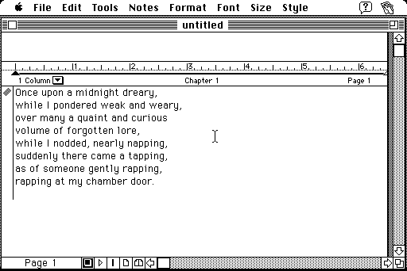

Download
fullwrite206installer.zip (1.4M) FullWrite Professional 2.0.6 repackaged into a zipped hfs disk image and checksum file. The disk image can be mounted with Mini vMac.
copyright: Akimbo Systems, Inc.
mod date: Jan 21, 1997
license: freeware
An "intuitive word processor with desktop publishing power". FullWrite 2.0.6 was released as freeware in 1998, with "FREE-33333-33333" as a valid serial number. (FullWrite Professional on Wikipedia)

If you find these downloads useful, please consider helping the Gryphel Project, which hosts them.
Here is the md5 checksum for the download, signed with Gryphel Key 5:
--------- GRY SIGNED TEXT --------- 9a9f93ae358aee675d56d100b242e1b4 fullwrite206installer.zip ------- BEGIN GRY SIGNATURE ------- Gry/4Xa8CFcUzxdN/IAVx+/dob10+TYKiJrIDiL9IQyj5QwcMPBtvQ6um7P2fBEy I9u8/lK746nigCynF3O0lgLUaSRcGkvwpjAMmZ7tycYYIfTKLSbABuP9V4a0mYCx ax898MQaqhJhPSOgkYcioxc4CmbYRXPB5P024PGctkVCDKlvNyopN0fzPs1KsF1f -------- END GRY SIGNATURE --------